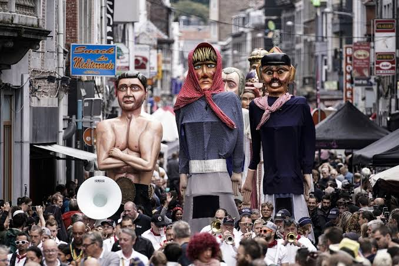

CityLoop Quest Liège


Liège aime les fêtes qui prennent la rue. Les fêtes du 15 août en Outremeuse en sont l’exemple le plus célèbre : procession, sermon en wallon, cortège folklorique, géants, concerts, marché aux puces et ambiance populaire transforment le quartier en scène ouverte.
Tchantchès et Nanesse occupent une place particulière dans cet imaginaire. Ces figures de marionnettes ne sont pas de simples souvenirs pour enfants : elles condensent l’accent, l’ironie, la loyauté, les colères et la tendresse que les Liégeois aiment reconnaître comme leur tempérament.
La Batte, chaque dimanche, appartient aussi aux traditions vivantes. On y vient pour acheter, flâner, discuter, manger, comparer les prix, écouter les accents. Le marché raconte une sociabilité liégeoise sans vitrines de musée : directe, bruyante, généreuse et très attachée à ses quais.
Les Coteaux illuminés, les fêtes de Wallonie, les événements de quartier et les grands rendez-vous culturels prouvent que la ville ne sépare pas nettement patrimoine et plaisir. À Liège, une fête réussie est souvent une manière très sérieuse de défendre une mémoire commune.